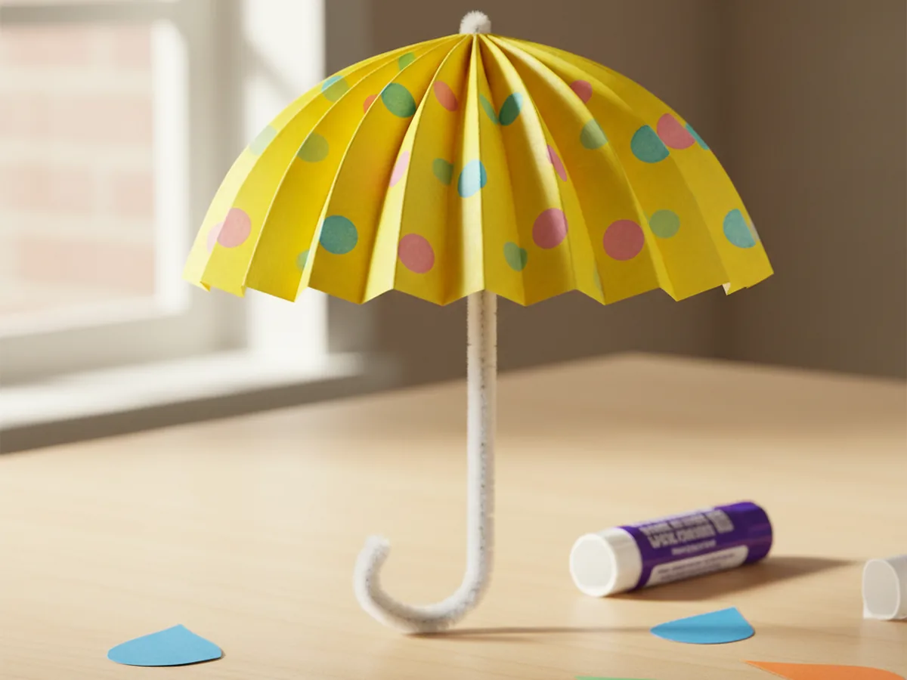
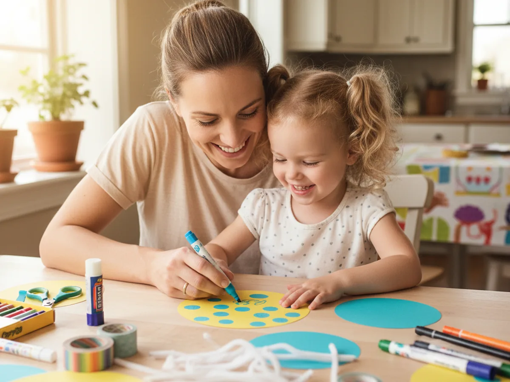
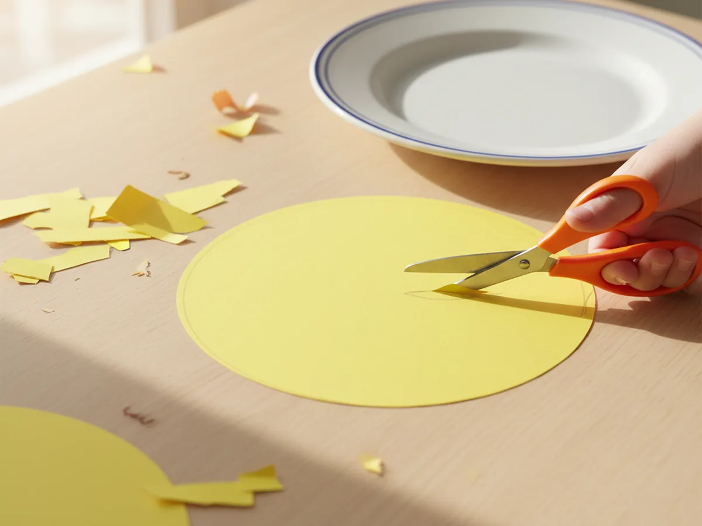
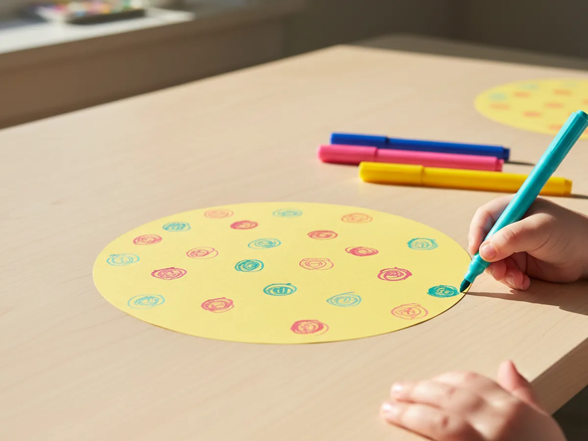
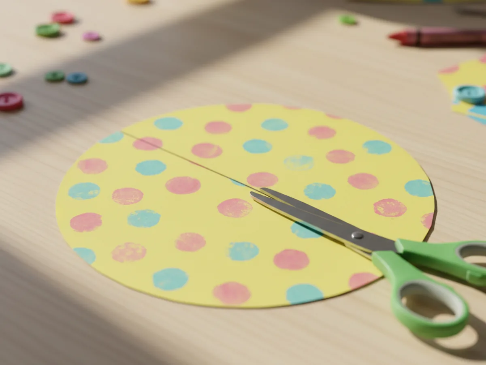
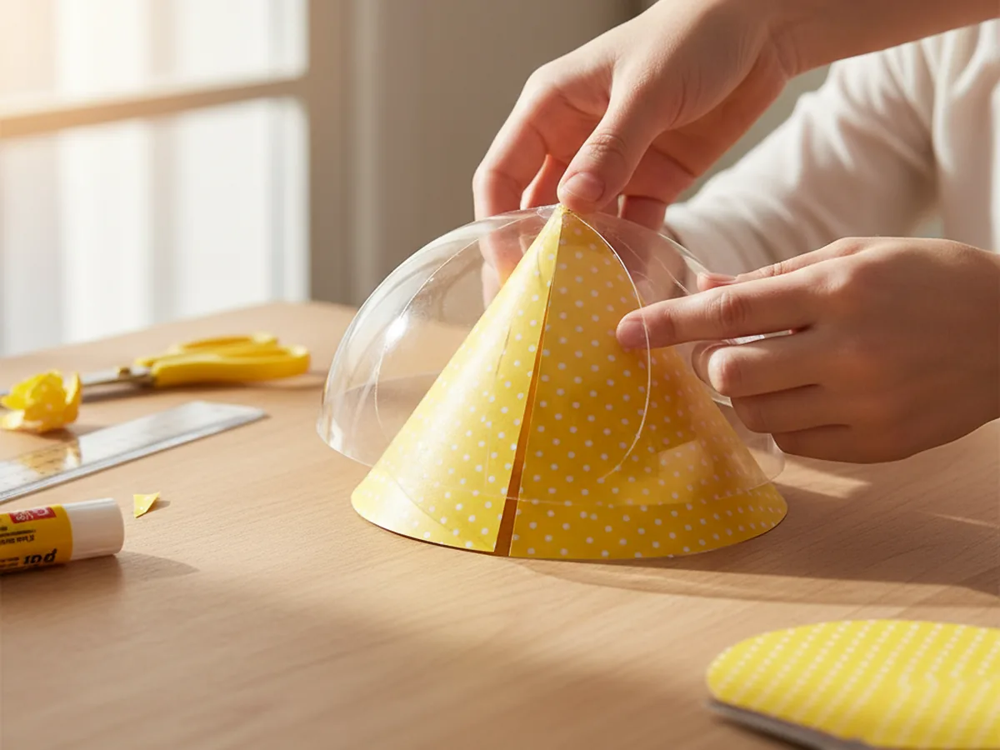
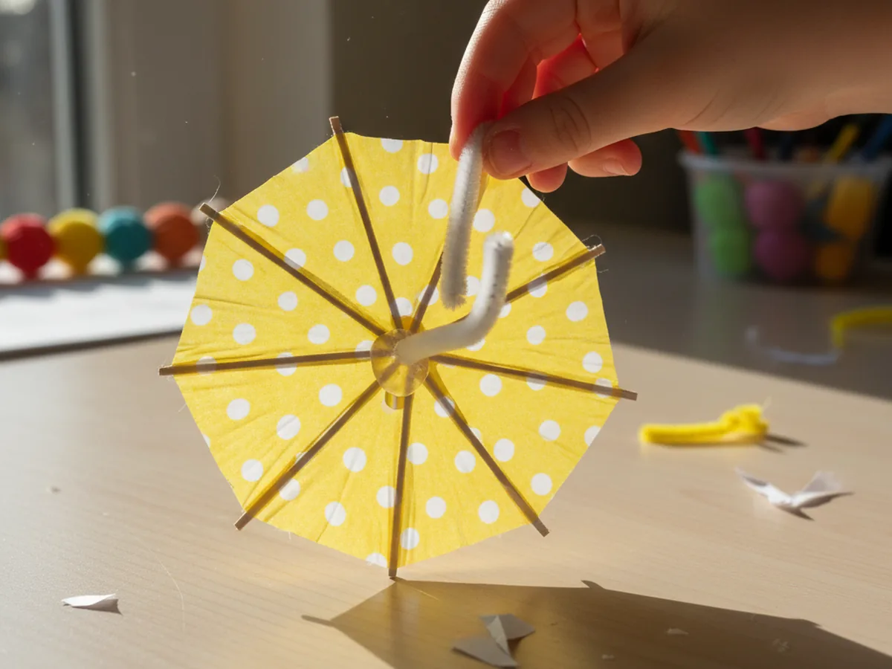
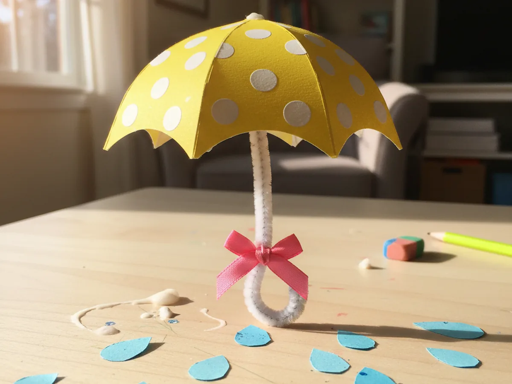
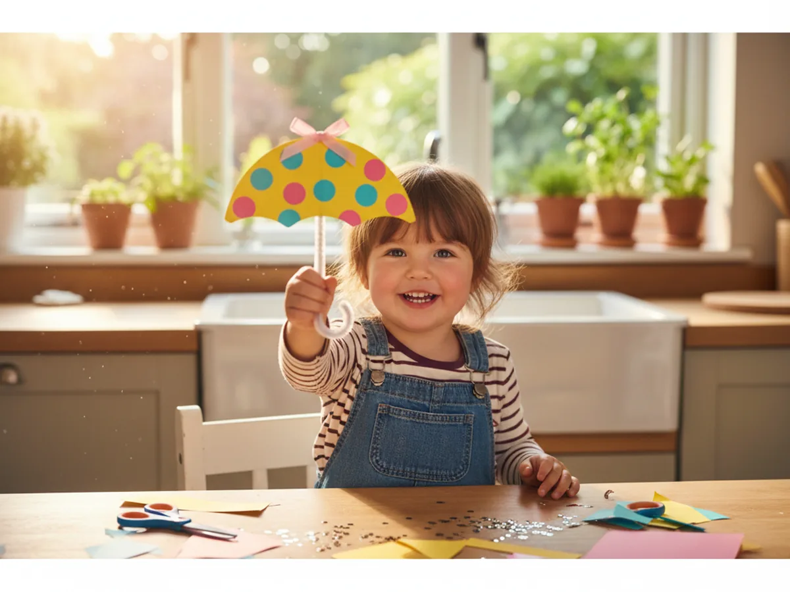

This little paper umbrella craft is one of those cozy rainy day projects that takes about 30 minutes start to finish and leaves you with the cutest tiny umbrella you ever did see. You cut a circle from cardstock, decorate the flat side with polka dots, snip a single slit, overlap and glue the edges into a domed canopy, and finish with a curved pipe cleaner handle. The first time your child holds the finished umbrella up by its handle, you can almost hear the giggles. ☔
It is a calm, low-mess activity for kids age 3 and up, and one of the sweetest spring crafts to do with a young child at the kitchen table. Toddlers can decorate the flat circle before it gets folded, while older kids can manage the cutting and cone-shaping on their own. Either way, your paper umbrella craft ends up colorful, springy, and ready to brighten up any window or windowsill.
Why Kids Love This Craft
There is something almost magical about a tiny umbrella. Children love the moment a flat circle of paper turns into a real domed canopy that opens above the handle just like a real umbrella. As soon as the canopy takes shape, most kids want to twirl it, parade it around the kitchen, and pretend they are walking through a spring rain shower. It feels like a toy and a craft all in one, and that is exactly why this paper umbrella craft for kids is so satisfying to make.
This craft also gently builds real skills without ever feeling like a lesson. Cutting the big circle gives little hands solid scissor practice. Decorating the flat paper with markers, washi tape, and stickers helps with focus and color choice. Overlapping the cut edges into a cone is a beautiful spatial exercise that teaches kids how a flat shape becomes a 3D object. Bending the pipe cleaner into a curved umbrella handle adds a tiny dose of fine motor work too. And none of it feels like work because the whole project ends in a wearable, twirlable, totally proud-of-it little umbrella.
The decorating step is where every child's personality shines through. Some kids cover the canopy in rainbow polka dots, some draw stripes, some glue on hearts, stars, and tiny paper raindrops. There is no wrong way to make an easy paper umbrella craft, and that freedom is exactly what makes children proud of what they made. By the time the ribbon bow goes on the handle, the umbrella has a name, a story, and usually a quick fashion show across the living room. 🌧️

What You'll Need
Here is everything you need to make this paper umbrella craft at home, and most of it is probably already tucked into your craft drawer.
- Astrobrights Cardstock, 65 lb Bright Assortment, sturdy enough for a canopy that holds its domed shape without flopping
- Crayola Construction Paper, 240 ct, perfect for cutting tiny raindrops, hearts, and trim shapes for the canopy
- Elmer's Disappearing Purple Glue Sticks, 4 pack, easy for little hands and dries clear so no white residue shows on the finished umbrella
- Fiskars Blunt-Tip Kids Scissors, safe for ages 4 and up and just right for cutting the cardstock circle and slit
- Crayola Broad Line Markers, for drawing playful polka dots, stripes, and tiny raindrop patterns on the canopy
- Creativity Street White Chenille Stems, 100 pack, the perfect bendable handle for a mini paper umbrella
- Mr. Pen Satin Ribbon, Vibrant Rainbow Set, for tying a sweet little bow at the base of the umbrella handle
- Officemate 1-Hole Punch, makes a clean hole at the top of the canopy so the pipe cleaner slides right through
- A pencil and a dinner plate, optional for sketching the circle before cutting
Step-by-Step Instructions
Take this one calm step at a time and your child will have a finished mini umbrella in about half an hour. Let them help with every part, even if they just press the glue or pick the polka dot colors.
Step 1: Cut a Circle from Cardstock
Start by tracing a large circle on a piece of bright cardstock using a dinner plate as your guide. A circle about 9 inches across works perfectly for a sweet little tabletop umbrella. Once the circle is drawn, cut along the pencil line with child-safe scissors so you end up with a clean round shape. This circle will become the umbrella canopy, the part that arches over the handle, so try to keep the edge smooth as you go.

Step 2: Decorate the Flat Circle
Before the circle becomes a cone, decorate the flat side first while the paper is still easy to work on. This is by far the easiest stage for little hands. Hand your child markers, washi tape strips, stickers, and small paper cutouts and let them go to town. Polka dots, stripes, hearts, stars, raindrop shapes, or even their name written across the front all look adorable on a finished canopy. Press every washi tape strip down firmly so nothing peels up after folding.

Step 3: Cut a Slit from Edge to Center
Now make one straight cut from the outer edge of the circle straight to the very center. Just one cut, no more. This little slit is what allows the flat circle to overlap and form the dome shape of the canopy. Take it slow and let your child help guide the scissors if they want. The slit does not need to be perfect, just clean and reaching the middle of the circle.

Step 4: Form the Canopy into a Shallow Cone
Here is the magical step. Hold the circle with the slit at the top and gently slide one cut edge over the other so the paper begins to curve into a shallow cone. Keep sliding until the canopy looks like a tiny umbrella dome with about a 2 inch overlap. Run a thin line of glue stick along the underside of the overlap and press the two layers together firmly for about 30 seconds. The flat circle is now a real paper umbrella craft canopy, and your child will probably gasp the first time they see it.

Step 5: Attach the Pipe Cleaner Handle
Punch a small hole at the very tip of the canopy, right where the cone comes to a point. A regular hole punch or even the sharp tip of a pencil works fine here. Push one end of a white pipe cleaner up through the hole from the inside, then gently bend that top end over to anchor it like a tiny hook. Add a dab of glue around the hole on the inside if you want extra hold. Now bend the bottom of the pipe cleaner into a soft J-shape to form the curved umbrella handle. Your cute paper umbrella craft should now stand or hang upright on its own.

Step 6: Add a Ribbon Bow
For the sweetest finishing touch, tie a small satin ribbon around the base of the handle, just under the canopy, and finish it with a tiny bow. A 6 inch piece of ribbon is plenty. Pink, mint, or rainbow ribbons all look adorable against bright cardstock. This little detail is what turns a simple paper umbrella craft into something that looks display-worthy on a windowsill or shelf.

Step 7: Display the Finished Paper Umbrella Craft
Set the umbrella down on the table and let your child admire what they just made. You can stand it upright by curling the handle so it props the umbrella at a tilt, hang it from a string near a window, or perch it on a bookshelf alongside paper raindrop cutouts for a cheerful spring display. Take a quick photo while the smile is still huge. Most kids will want to keep their finished paper umbrella craft on the kitchen counter for the rest of the week. 💛

Variations to Try
Mini Cocktail Umbrella Drinks: Shrink the whole project down by tracing a small saucer instead of a dinner plate. Use a wooden toothpick or coffee stirrer for the handle instead of a pipe cleaner. The result is a tiny paper drink umbrella that looks adorable poked into a slice of fruit, a cupcake, or a play tea party cup. Older kids love making a whole batch in different colors.
Rainy Day Window Mobile: Make three or four umbrellas in different colors and hang them from a wooden dowel or twig with thin string. Cut paper raindrop shapes from blue construction paper and hang them at varying lengths between the umbrellas. The whole mobile looks beautiful in a kitchen window during a real rainy day and turns this paper craft into a piece of seasonal decor.
Tissue Paper Umbrella: Skip the cardstock and try this with a layered tissue paper canopy instead. The thinner paper gives a soft, delicate look that catches the light. This version works best with kids age 5 and up since tissue paper is more delicate to fold and glue.
Final Thoughts
A simple paper umbrella craft is one of those projects that proves you do not need a special occasion to turn a plain afternoon into something memorable. A sheet of cardstock, a glue stick, and 30 minutes at the table is enough to make a sweet keepsake your child will be proud of. The real win is the moment your little one holds up their tiny umbrella, looks at you, and says, "Look, mommy, I made this." That kind of small magical moment is exactly what crafting together is about. Happy crafting, mama. 🌷
More Crafts You'll Love
If your family enjoyed making this little umbrella, here are two more sweet spring paper crafts to try next.